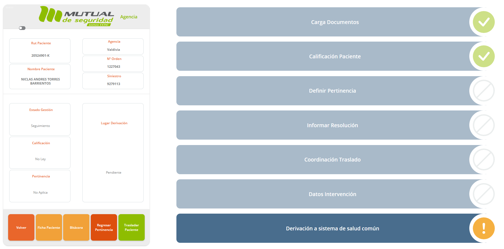
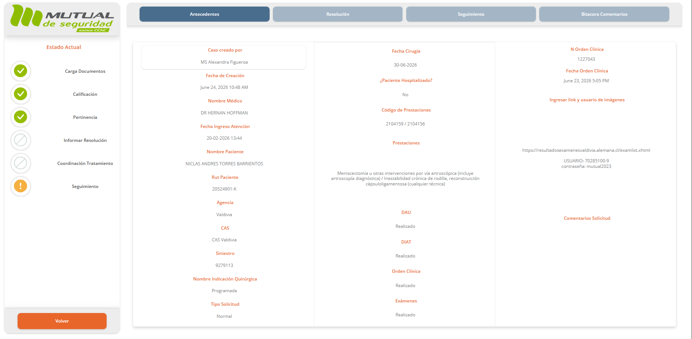
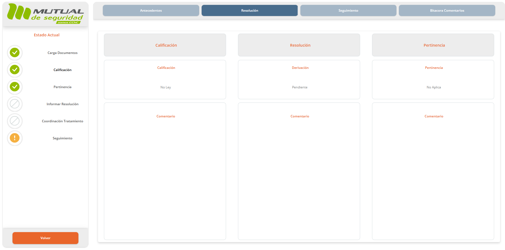
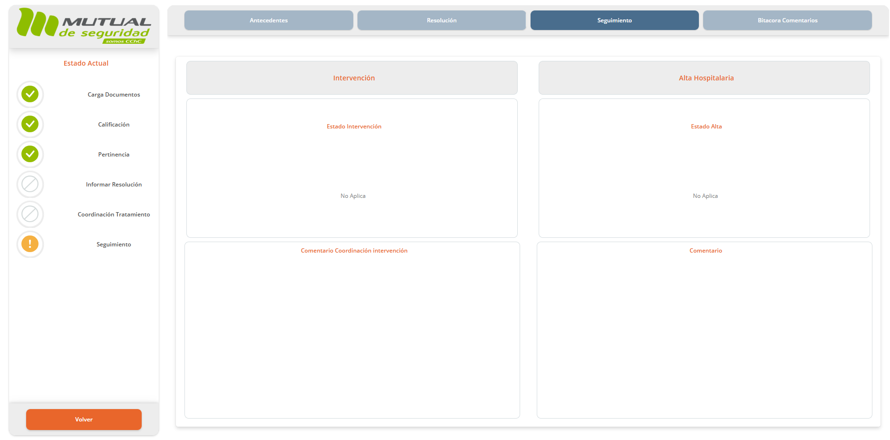
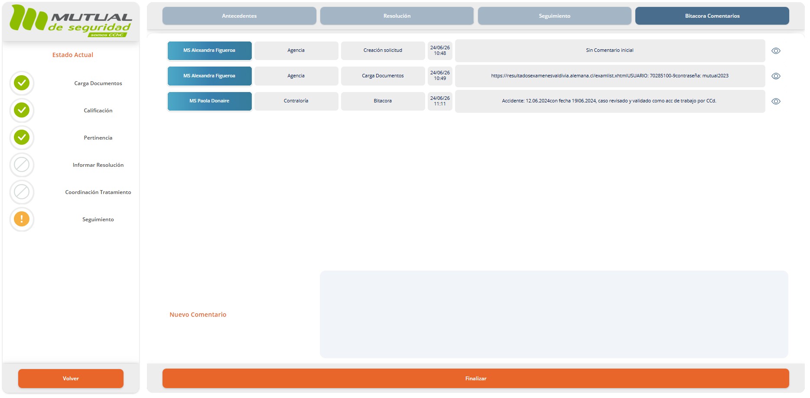

🏢 Rol: Agencia
El detalle de solicitud muestra toda la información del caso distribuida en cuatro pestañas.

Pestaña Antecedentes

Pestaña Resolución

Pestaña Seguimiento

Pestaña Bitácora Comentarios
Pestañas del detalle
📋 Pestaña Antecedentes
Muestra los datos completos de la solicitud: médico, fechas, paciente, agencia, siniestro, orden clínica, prestaciones, documentos cargados (DAU, DIAT, Orden Clínica, Exámenes) y link de imágenes si aplica.
⚖️ Pestaña Resolución
Muestra el resultado de las definiciones iniciales: Calificación (Ley / No Ley), Derivación (resultado), y Pertinencia (Quirúrgico / No quirúrgico / No Aplica), con los comentarios de cada actor.
🔄 Pestaña Seguimiento
Registra el estado de la Intervención (Estado y fecha) y el Alta Hospitalaria (Estado y comentario). Aquí se cierra el ciclo clínico del caso.
📝 Pestaña Bitácora Comentarios
Historial cronológico de todos los comentarios y acciones realizadas por los distintos actores. También permite agregar nuevos comentarios.
Panel lateral izquierdo
| Elemento | Descripción |
|---|
| Estado Actual | Indicadores visuales de cada etapa del flujo (✅ completada / ⊘ no aplica / ⚠️ pendiente) |
| Botón Ficha Paciente | Accede a la ficha completa del paciente |
| Botón Bitácora | Acceso rápido a la bitácora de comentarios |
| Botón Regresar Pertinencia | Permite retroceder el caso a la etapa de definición de pertinencia (confirmar antes de ejecutar) |
| Botón Trasladar Paciente | Inicia el proceso de traslado del paciente |

Modal de confirmación — Regresar Pertinencia
⚠️
"Regresar Pertinencia" es una acción reversible pero que reinicia etapas ya completadas. El sistema pedirá confirmación. Solo úsala si hay un error en la definición de pertinencia.